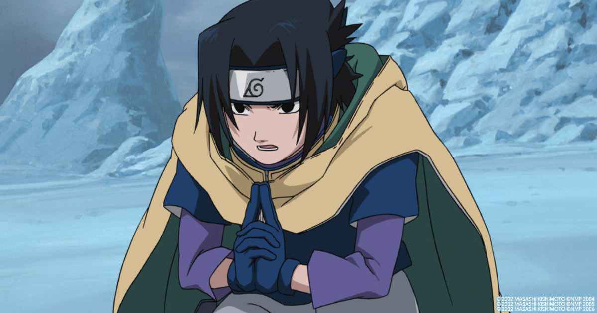

Naruto Shippuden
Six Paths of Pain
you konw the episode list click the photo

It's time to take it back to the old school when Naruto was a little scamp with
big dreams of becoming the Hokage.
When he only had a couple of jutsu and got by on his wits and
never-give-up attitude.
In other words, it's time to Believe It again! And believe it you will when you
dive into these
three anime classic movies from the early days.
collection of wallpeapers
Who could forget Ninja Clash in the Land of Snow? Where Naruto, Sasuke and Sakura
travel
to the Land of the Snow to rescue a movie star/princess. Then in Legend of the Stone of Gelel,
a simple mission to track down a ferret turns into a fierce struggle over a legendary stone of power. And
finally,
Naruto and Rock Lee wind up in the circus in Guardians of the Crescent Moon Kingdom.
There they meet sabertooth tigers and more while trying to stop a violent uprising.

The Naruto Triple Feature Collector’s Edition (Steelbook) comes with special cover art drawn by American
comic book artist, Whilce Portacio (Uncanny X-Men, Iron Man). Also comes with an animated short: Hidden Leaf
Village Grand Sports Festival, plus audio commentary for Legend of the Stone of Gelel and Guardians of the
Crescent Moon Kingdom
by the English dub director and cast members.
Iruka’s quotes
オレなあ…両親が死んだからよ…誰もオレをほめてくれたり認めてくれる人がいなくなった。
ore naa. ryoushin ga shinda kara yo. dare mo ore o homete kuretari mitomete kureru hito ga inakunatta.
I… Because my parents died I had no one to praise me or acknowledge me…
Uchiha Sasuke’s quotes
名はうちはサスケ。
na wa uchiha sasuke.
The name is Uchiha Sasuke.

 Naruto vol 1 comic : Uzumaki Naruto Paperback – 1 January 2003
Naruto vol 1 comic : Uzumaki Naruto Paperback – 1 January 2003